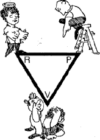

|
 |
Do your family adults know how to resolve these divisive Persecutor - Victim - Rescuer relationship stres-sors? They're very common in typical low-nurturance families and groups, and usually indicate significant psychological wounds and adult unawareness. Do you have a favorite triangle role? See Lesson 4 video / more detail |